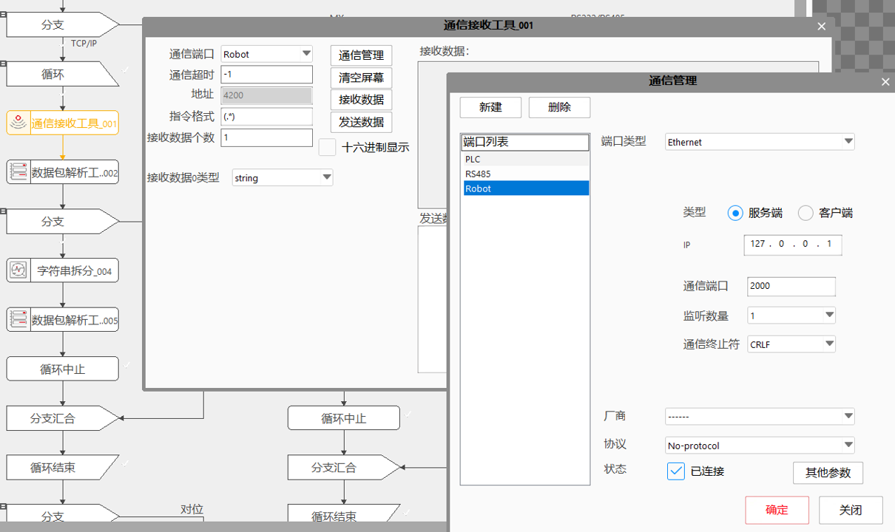
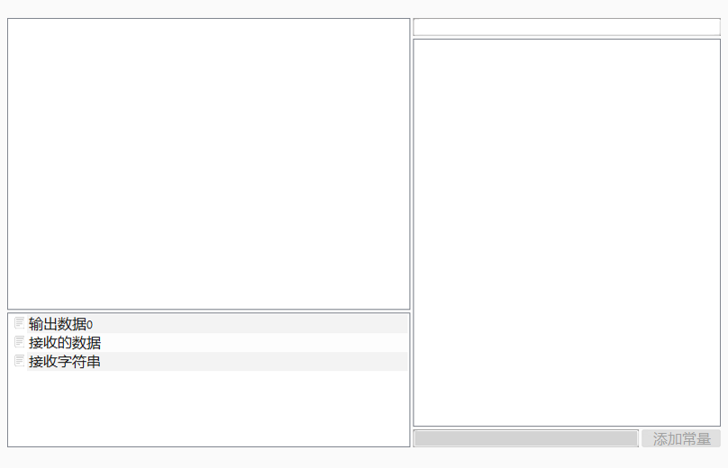

Công cụ nhận truyền thông chủ yếu nhận các lệnh dữ liệu theo định dạng cụ thể từ cổng của thiết bị mục tiêu, hoàn tất việc trao đổi thông tin với thiết bị bên ngoài. Thông thường, trước khi sử dụng cần cấu hình cổng truyền thông trong hộp thoại quản lý truyền thông (Thanh công cụ - Cài đặt - Truyền thông). Đặc biệt, dữ liệu nhận từ truyền thông có hai cách phân tích. Một là viết biểu thức chính quy theo giao thức truyền thông, sau đó kết hợp với công cụ phân tích gói dữ liệu để phân tích dữ liệu nhận được. Cách thứ hai là không viết biểu thức chính quy, lúc này có thể kết hợp với công cụ tách chuỗi để phân tích dữ liệu truyền thông, nhưng cách này yêu cầu định dạng dữ liệu nhất định, không nhất thiết đáp ứng được mọi nhu cầu.
Nhận và phân tích dữ liệu từ mạng, cổng nối tiếp, thanh ghi,… để các công cụ tiếp theo sử dụng;
Sử dụng mạng, cổng nối tiếp, thanh ghi,… để thiết lập kết nối với thiết bị khác, theo các quy tắc đã thỏa thuận để nhận thông tin từ thiết bị và phân tích ra các dữ liệu tương ứng (như bool, char, string, double, float, int, long, short, unsigned char, unsigned long, unsigned short).

Nhấn chuột phải vào công cụ nhận truyền thông -> Thuộc tính -> Quản lý truyền thông, mở giao diện quản lý truyền thông và tạo cổng mới. Ví dụ trên là sử dụng mạng dạng client không có giao thức; sau khi kết nối, nhấn nút “Xác nhận”, thông tin cổng sẽ được đồng bộ lên giao diện nâng cao của công cụ nhận truyền thông. Trong giao diện nâng cao, thiết lập các tham số theo thỏa thuận với thiết bị kết nối, sau đó có thể kiểm tra kết nối. Khi kiểm tra ổn, nhấn nút đóng (hình dấu X) ở góc trên bên phải để đóng cửa sổ công cụ nhận truyền thông, các tham số thiết lập trong giao diện nâng cao sẽ được đồng bộ vào thuộc tính tham số của công cụ, lúc này công cụ có thể sử dụng bình thường.

Các công cụ khác cần kết nối chuỗi dữ liệu đến công cụ nhận truyền thông này, có hai cách:
1. Kết nối trực tiếp dữ liệu đầu ra;
2. Trước khi sử dụng, kết nối công cụ phân tích gói dữ liệu và sử dụng các tham số phân tích được;
| Hiện tượng | Cách giải quyết |
|---|---|
| Không thể mở cổng | 1. Kiểm tra cổng có bị chiếm không; 2. Kiểm tra cổng đã được mở chưa; 3. Kiểm tra cấu hình tham số; |
| Kết nối truyền thông thất bại | 1. Sử dụng công cụ truyền thông để kiểm tra kết nối; 2. Kiểm tra đường kết nối; 3. Kiểm tra cổng có mở được không; |
| Tên tham số | Giải thích |
|---|---|
| Cổng truyền thông | Chọn thiết bị cần truyền thông (cấu hình cổng thực hiện qua hộp thoại quản lý truyền thông). |
| Thời gian chờ truyền thông | Thời gian chờ truyền thông của thiết bị (đơn vị ms, đặt -1 để chờ liên tục). |
| Định dạng lệnh | Định dạng nhập theo dạng biểu thức chính quy. Khi định dạng lệnh trống, có thể sử dụng kết hợp công cụ tách chuỗi để phân tích dữ liệu nhận trực tiếp |
| Số lượng dữ liệu nhận | Số lượng dữ liệu nhận (cấu hình theo giao thức truyền thông). |
| Loại dữ liệu nhận | Loại dữ liệu nhận (cấu hình theo giao thức truyền thông). |
| Tên tham số | Giải thích |
|---|---|
| Dữ liệu đầu ra 0… | Dữ liệu nhận được sau khi phân tích |
| Dữ liệu nhận | Dữ liệu truyền thông đã được phân tích theo biểu thức chính quy |
| Chuỗi nhận | Chuỗi đầy đủ nhận được từ công cụ truyền thông (chưa tách) |
| Kết quả thực thi | Kết quả thực thi của công cụ |
| Thời gian thực thi | Thời gian thực thi của công cụ |
Một biểu thức chính quy chỉ là một chuỗi, không giới hạn độ dài. “Biểu thức con” là một phần trong toàn bộ biểu thức chính quy, thường là biểu thức trong dấu ngoặc hoặc các nhánh được phân tách bằng "|". (Theo mặc định, chữ cái trong biểu thức phân biệt chữ hoa và chữ thường).
Một biểu thức chính quy thường bắt đầu bằng ký tự chèn "^" và kết thúc bằng ký tự "$". Biểu thức có ba loại dấu ngoặc: dấu ngoặc vuông "[ ]" chứa các ký tự cần so khớp; dấu ngoặc nhọn "{}" chỉ số lượng ký tự cần so khớp; dấu ngoặc tròn "()" dùng để nhóm.
Ví dụ:
^[0-9]{8}$
^[a-z]{3}[0-9]{8}$ nghĩa là ba ký tự đầu là chữ cái, tiếp theo là 8 chữ số. Nếu phần chữ cái có cả chữ hoa và chữ thường, biểu thức có thể viết thành: ^[a-zA-Z]{3}[0-9]{8}$
Xác thực định dạng email
Email bắt đầu bằng 1-10 ký tự chữ và số, sau đó là "@": ^[a-zA-Z0-9]{1,10}@; sau "@" là 1-10 ký tự chữ, tiếp theo là ".": [a-zA-Z]{1,10}; cuối cùng kết thúc bằng .com hoặc .org: .(com|org)$; Vậy biểu thức đầy đủ có thể viết: ^[a-zA-Z0-9]{1,10}@[a-zA-Z]{1,10}\.(com|org)$
Các ký tự đặc biệt thường dùng:
"." : khớp với bất kỳ ký tự đơn nào ngoài "\n". Để khớp bao gồm cả "\n", cần dùng các mẫu như "[\s\S]".
"^" : khớp với vị trí bắt đầu chuỗi nhập, không khớp với ký tự nào. Để khớp ký tự "^" thực, dùng "\^".
"$" : khớp với vị trí kết thúc chuỗi nhập, không khớp với ký tự nào. Để khớp ký tự "$" thực, dùng "\$".
"*" : khớp 0 hoặc nhiều lần ký tự hoặc biểu thức trước đó, tương đương "{0,}". Ví dụ "^*b" có thể khớp "b", "b", "^b",…
"+" : khớp 1 hoặc nhiều lần ký tự hoặc biểu thức trước đó, tương đương "{1,}". Ví dụ "a+b" có thể khớp "ab", "aab", "aaab",…
"?" : khớp 0 hoặc 1 lần ký tự hoặc biểu thức trước đó, tương đương "{0,1}". Ví dụ "a[cd]?" khớp "a", "ac", "ad". Khi theo sau các ký tự định lượng khác như "*", "+", "?", "{n}", "{n,}", "{n,m}", thì mẫu khớp là "không tham lam", nghĩa là khớp chuỗi ngắn nhất có thể, trong khi mặc định là "tham lam" khớp dài nhất.
"|" : thực hiện phép toán logic "hoặc" giữa hai điều kiện khớp. Ví dụ biểu thức "(him|her)" khớp với "it belongs to him" và "it belongs to her", nhưng không khớp với "it belongs to them".
"\" : đánh dấu ký tự tiếp theo là ký tự đặc biệt, văn bản, tham chiếu ngược hoặc escape octal. Ví dụ "n" khớp ký tự "n", "\n" khớp xuống dòng, "\(" khớp "(".
\w : khớp chữ cái, số hoặc dấu gạch dưới, tức A~Z, a~z, 0~9, _
\W : khớp bất kỳ ký tự nào không phải chữ, số, dấu gạch dưới
\s : khớp ký tự trắng bất kỳ, gồm space, tab, formfeed, newline, vertical tab, tương đương "[ \f\n\r\t\v]"
\S : khớp ký tự không phải ký tự trắng, tương đương "[^\f\n\r\t\v]"
\d : khớp chữ số 0~9, tương đương "[0-9]"
\D : khớp ký tự không phải chữ số, tương đương "[^0-9]"
\b : khớp biên của từ (vị trí giữa chữ và khoảng trắng), không khớp ký tự nào. Ví dụ "er\b" khớp "er" trong "never" nhưng không khớp "er" trong "verb"
\B : khớp không phải biên từ. Ví dụ "er\B" khớp "er" trong "verb" nhưng không khớp "er" trong "never"
\f : khớp ký tự ngắt trang, tương đương "\x0c" và "\cL"
\n : khớp ký tự xuống dòng, tương đương "\x0a" và "\cJ"
\r : khớp ký tự carriage return, tương đương "\x0d" và "\cM"
\t : khớp ký tự tab, tương đương "\x09" và "\cI"
\v : khớp ký tự tab dọc, tương đương "\x0b" và "\cK"
\cx : khớp ký tự điều khiển do "x" chỉ định, ví dụ "\cM" khớp Control-M hoặc carriage return. Giá trị x phải là A-Z hoặc a-z, nếu không sẽ coi "c" là ký tự bình thường
{n} : n là số nguyên không âm, khớp đúng n lần. Ví dụ "o{2}" không khớp "o" trong "Bob" nhưng khớp 2 ký tự "o" trong "food"
{n,} : n là số nguyên không âm, khớp ít nhất n lần. Ví dụ "o{2,}" không khớp "o" trong "Bob" nhưng khớp tất cả "o" trong "foooood". "{1,}" tương đương "+", "{0,}" tương đương "*"
{n,m} : n và m là số nguyên không âm, n≤m, khớp ít nhất n lần và tối đa m lần. Ví dụ "o{1,3}" khớp 3 ký tự "o" đầu tiên trong "fooooood". Chú ý không thêm khoảng trắng giữa dấu phẩy và số. Ví dụ "ba{1,3}" khớp "ba", "baa" hoặc "baaa"
x|y : khớp "x" hoặc "y", ví dụ "z|food" khớp "z" hoặc "food"; "(z|f)ood" khớp "zood" hoặc "food"
[xyz] : tập ký tự, khớp bất kỳ ký tự nào trong tập. Ví dụ "[abc]" khớp "a" trong "plain"
[^xyz] : tập ký tự phủ định, khớp ký tự không có trong tập, ví dụ "[^abc]" khớp "p" trong "plain"
[a-z] : phạm vi ký tự, khớp bất kỳ ký tự trong phạm vi. Ví dụ "[a-z]" khớp bất kỳ chữ thường từ a đến z
[^a-z] : phạm vi ký tự phủ định, khớp ký tự không trong phạm vi. Ví dụ "[^a-z]" khớp bất kỳ ký tự không nằm trong "a-z"
( ) : nhóm biểu thức. Biểu thức trong dấu ngoặc sẽ được lưu vào vùng tạm, tối đa 9 nhóm, có thể tham chiếu bằng \1 đến \9
Tham khảo "\Samples\Công cụ Gửi & Nhận dữ liệu.gvp".
Công cụ nhận dữ liệu sử dụng công cụ gửi dữ liệu hoặc công cụ trợ giúp truyền thông để thiết lập kết nối và sử dụng.